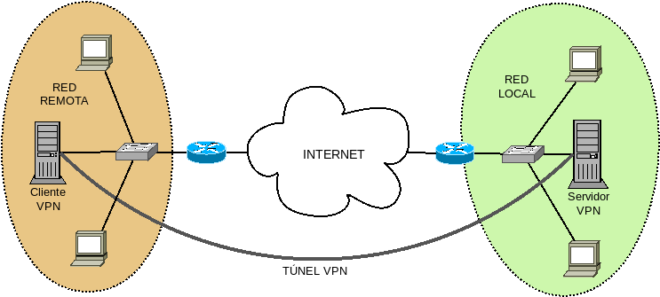

7.4.3.1.3. Conexión sede-sede¶
El próposito en este caso es que el sistema remoto no sea un dispositivo (el equipo móvil) sino toda una sede remota, esto es, una LAN. Un buen esquema de lo que pretendemos es el siguiente:
Las diferencias fundamentales con la conexión sede-equipo móvil son:
- Tdos los dispositivos de la red remota (y no sólo el cliente VPN) deben ser capaces de conectar con la red local.
- Puede desearse también que los equipos de la red local conecten con los de la remota, si no todos los servicios se encuentran en la sede local.
- Es más que probable que controlemos la red remota y, por tanto, que no tengamos necesidad alguna de salir a internet a través del túnel VPN.
Para la configuración utilizaremos los siguientes principios:
- Por el tunel VPN sólo circulará el tráfico destinado al otro lado (no lo usaremos para salir a internet).
- Asignaremos una IP fija al cliente VPN.
- Autenticaremos los clientes con certificado, lo que obliga a crear una entidad certificadora y acreditar también con ella el certificado de servidor.
Nota
Las configuraciones pueden ser más sencillas si servidor, cliente o ambos actúan como puerta de enlace de sus respectivas redes. Para hacerlas más generales, no se presupondrá esto, salvo para el cliente en la configuración de capa de enlace.
7.4.3.1.3.1. Capa de red¶
Para implementar esta solución crearemos estas tres redes:
| Red | Máquina | ||
|---|---|---|---|
| Local | 192.168.255.0/24 | Servidor VPN (eth0) | 192.168.255.2 |
| Router Local | 192.168.255.1 | ||
| Túnel VPN | 10.8.0.0/24 | Servidor VPN (tun0) | 10.8.0.1 |
| Cliente VPN (tun0) | 10.8.0.2 | ||
| Remota | 192.168.1.0/24 | Cliente VPN (eth0) | 192.168.1.2 |
| Router remoto | 192.168.1.1 | ||
La diferencia fundamental en la configuración es que, tanto servidor como cliente, deben hacer de router entre su red y la red del otro extremo. Además, dado que nuestra intención es que pueda haber túneles que conecten dos sedes, tiene cierto sentido que las IPs asignadas a estos clientes que conectan sedes sean fijas en vez de dinámicas.
7.4.3.1.3.1.1. Servidor¶
Como configuración para el servidor, podemos usar esta:
port 1194
proto udp
dev tun0
ca certs/ca.crt
cert certs/server.crt
key keys/server.key
dh keys/dh2048.pem
# Configuración de la red del túnel VPN
mode server
tls-server
topology subnet
ifconfig 10.8.0.1 255.255.255.0
client-config-dir ccd-dir
ifconfig-pool 10.8.0.10 10.8.0.127
ifconfig-pool-persist ipp.txt
# Encaminamiento
push "route-gateway 10.8.0.1"
push "route 192.168.255.0 255.255.255.0 vpn_gateway"
route 192.168.254.0 255.255.255.0 10.8.0.2
keepalive 10 120
compress lz4
persist-key
persist-tun
status openvpn-status.log
verb 5
cipher AES-128-CBC
tls-auth keys/ta.key 0
user nobody
group nogroup
max-clients 10
Teniendo presente la configuración para capa 3 para un road warrior, escudriñaremos las diferencias:`
En este caso, la autenticación del cliente es a través certificado digital, no de contraseña. De hecho, el CN que hayamos definido al crear el certificado de cliente, será el nombre con el que el servidor identifique a tal cliente. Comno consecuencia, han desaparecido las líneas de configuración para la autenticación mediante contraseña.
Deja de tener sentido también el enmascaramiento, ya que nuestra intención es que no solamente la red remota acceda a las máquinas de la red local, sino que las locales accedan también a las máquinas remotas. A menos, claro está, que la sede del servidor centralice todos los servicios. En ese caso, lo más conveniente es enmascarar como hicimos en el caso del roadwarrior.
Como queremos que algunos clientes tengan IP fija (los que conectan sedes) y no (los equipos móviles), no basta con definir la directiva
server, como se hizo en el caso anterior:Se fija la IP del servidor con
ifconfig.Se define un rango que no ocupa toda la red con
ifconfig-pool.Se define un subdirectorio llamado
ccd-dirdentro del cual se incluirán ficheros en que cada nombre coincide con el nombre de cada cliente con IP fija, dentro de cada uno de los cuales se establecerán sus IPs del siguiente modo:# /etc/openvpn/ccd-dir/cliente1 ifconfig-push 10.8.0.2 255.255.255.0
En lo relativo al encaminamiento, es necesario declarar que la puerta de enlace es la IP del servidor VPN, decirle a los clientes cuál es la red local con
push routey añadir a la tabla de encaminamiento del servidor cómo llegar a la red remota. Si la redes remotas fueran varias, porque fueran varios los clientes, entonces habría que añadir varias entradas.Nota
Si hay equipos móviles podemos optar, bien por incluir una entrada por cada equipo móvil, o bien hacer enmascaramiento como hicimos en el caso anterior.
Al margen del fichero de configuración, hay otra aspecto que debemos atender: hemos añadido la ruta que permite conocer al servidor VPN cómo alcanzar la red remota. Sin embargo, si no es la puerta de enlace de la red local, el resto de máquinas locales no tendrán noticia de esta entrada y, en consecuencia, será incapaces de conectar con la red remota. Esto se puede solucionar de dos formas:
- Añadiendo una ruta estática a la puerta de enlace de la red local para que entregue los paquetes dirigidos a la red remota al servidor VPN[1].
- Añadiendo la ruta estática a cada máquina de la red local lo cual puede muy fácilmente hacerse si todas reciben configuración dinámica mediante DHCP, incluyendo la opción 121.
7.4.3.1.3.1.2. Cliente¶
Para la configuración del cliente podemos usar esta otro fichero:
# /etc/openvpn/client/example/example.conf
client
dev-type tun
dev tun0
topology subnet
<connection>
remote 192.168.1.14 1194 udp
</connection>
resolv-retry infinite
ca client/example/ca.crt
remote-cert-tls server
nobind
persist-key
persist-tun
compress lz4
verb 3
cipher AES-128-CBC
tls-auth client/example/ta.key 1
# Autenticación con certificado de cliente
cert client/example/cliente1.crt
key client/example/cliente1.key
cuyas diferencias con la configuración que requería el road warrior se reduce a:
- Usar certificado para la autenticación.
- No usar el túnel como salida natural a internet. Como el servidor envía la ruta adecuada al cliente, no es necesario añadir ninguna directiva de encaminamiento.
Sin embargo, como en el caso del servidor, sólo el cliente añade la entrada estática para saber llegar a la red local. Si queremos que el resto de máquinas también lo tendremos que hacer una operación análoga a la que hicimos en el servidor: modificar la tabla de encaminamiento de la puerta de enlace, o bien, modificar la configuración DHCP.
7.4.3.1.3.2. Capa de enlace¶
Cuando el túnel se hace en la capa de enlace, la red remota puede participar de la red local, de manera que todas las máquinas, locales y remotas, se encuentren en la misma red lógica:

En la sede remota hemos situado el cliente VPN como puerta de enlace de la red[2], aunque no es preceptivo. Tal disposición hace recomendable que el cliente tenga dos interfaces físicas de red [3].
Como pretendemos que la configuración dinámica de los equipos la realice el servidor DHCP situado en la sede local, la configuración es semejante a la desarrollada para la conexión sede-equipo móvil, aunque hay alguna diferencia en la sede remota que se trataran a su debido tiempo.
El esquema de las interfaces de cliente y servidor es el siguiente:
Nota
Como en el caso de la conexíón sede-equipo móvil en capa de red de la constituición de los puentes se encargarán los script que crean el túnel.
7.4.3.1.3.2.1. Servidor¶
La configuración es una mezcla entre la anterior para road warrior, de la que tomamos la configuración estática del cliente y su autenticación mediante
certificado, y la configuración hecha para la conexíón
sede-equipo móvil en capa de red. de la que aprovechamos el resto
para hacer la siguiente configuración:
# /etc/openvpn/server.conf
port 1194
proto udp
dev tap0
dev-type tap
# Certificados y claves
ca certs/ca.crt
cert certs/server.crt
key keys/server.key
dh keys/dh2048.pem
# Configuración de la red del túnel VPN
server-bridge
client-config-dir ccd-dir
keepalive 10 120
compress lz4
persist-key
persist-tun
status openvpn-status.log
verb 3
cipher AES-128-CBC
tls-auth keys/ta.key 0
user nobody
group nogroup
max-clients 10
script-security 2
up "/etc/openvpn/bin/bridge.sh eth0 vpn"
plugin /usr/lib/openvpn/openvpn-plugin-down-root.so "/etc/openvpn/bin/bridge.sh eth0 vpn"
Dentro de ccd-dir podemos incluir la ip fija que queremos conceder al
cliente:
# /etc/openvpn/ccd-dir/cliente1
ifconfig-push 192.168.255.3 255.255.255.0
Nota
El script es exactamente el mismo que
nos resolvió la parte de servidor en la conexión con un equipo móvil.
7.4.3.1.3.2.2. Cliente¶
Las dos diferencias fundamentales respecto a la configuración para un equipo móvilson:
- Debemos crear un puente que incluya la intefaz TAP virtual y la interfaz física que conecte con el resto de dispositivos de la red remota, excepto el router que da salida al exterior.
- Los dispositivos de la red remota toman su configuración de red del servidor DHCP de la red local.
Tal cosa puede resolverse con la siguiente configuración:
# /etc/openvpn/client/example/example.conf
client
dev-type tap
dev tap0
topology subnet
<connection>
remote 192.168.1.14 1194 udp
</connection>
resolv-retry infinite
ca client/example/ca.crt
remote-cert-tls server
nobind
persist-key
persist-tun
compress lz4
verb 3
cipher AES-128-CBC
tls-auth client/example/ta.key 1
# Autenticación con certificado de cliente
cert client/example/cliente1.crt
key client/example/cliente1.key
user nobody
group nogroup
script-security 2
up "/etc/openvpn/bin/bridge.sh eth0 eth1 br0"
plugin /usr/lib/openvpn/openvpn-plugin-down-root.so "/etc/openvpn/bin/bridge.sh eth0 eth1 br0"
Las particularidades más reseñables de esta configuración son:
La configuración fija de la interfaz (la IP se fija en el servidor).
La autenticación del cliente con certificado.
No se modifica el encaminamiento por defecto del cliente, por lo que seguirá saliendo a internet a través de su router cercano.
El
script bridge.shejecutado en la creación es el ya ejecutado en otros casos y se encarga de:- Exactamente lo mismo que en el servidor.
- Enmascarar el tráfico que salga por la interfaz eth0, por razón que ya se verá.
En este caso, sin embargo, necesita tres parámetros: la interfaz que conecta con el router, la interfaz que conecta con los clientes de la red remota y pasa a formar parte del puente, y el nombre del propio puente.
Advertencia
Si queremos que los clientes remotos usen como puerta de enlace el router remoto, en vez de usar el túnel y salir por el router de la red local, es necesaria la instalación de ebtables:
# apt-get install ebtablesdel que se vale bridge.sh para lograr este fin. En principio, debería bastar con ello ya que la carga del módulo homónimo debería ser automática al ejecutar la orden dentro del script. Sin embargo, la carga parece fallar por lo que muy posiblemente haya que forzar la carga del módulo durante el arranque del sistema:
# echo "ebtables" >> /etc/modules
Esta configuración permite que circule el tráfico entre la red local y la red remota conectada a la interfaz eth1 del cliente VPN, como si de una misma red física se tratara. Hay, sin embargo, un inconveniente:
Si deseamos obtener las direcciones IP para los dispositivos remotos del servidor DHCP situado en la red remota, openvpn eliminará la información sobre la puerta de enlace, como ya se vio al tratar la configuración del cliente en la conexión sede-equipo móvil en capa de red. La consecuencia es que los dispositivos obtendrán una dirección IP, pero no sabrán cómo salir de la red, porque no habrá ninguna entrada que defina la puerta de enlace. El modo más astuto de evitar este inconveniente es usar la opción DHCP 121 e incluir en ella la puerta predeterminada. Si el servidor DHCP fuera dnsmasq, bastaría con incluir la línea:
dhcp-option=121,0.0.0.0/0,192.168.255.1
Ahora bien, lo lógico es poner como puerta de enlace el router de la red local,
ya que el servidor DHCP lo usan también los clientes de la red local. Esto, no
obstante, no es lo que queremos para los clientes de la red remota que, con esta
configuración, saldrán a internet pasando los paquetes a través del túnel. La
forma de evitar esto es hacer que los paquetes de los clientes remotos que
fueran a ser conmutados en el cliente VPN pasen a ser encaminados, porque así
éste los pasará por el túnel, si van a algún dispoitivo de la red local, y los
mandará a su puerta de enlace (el router remoto) si van a internet. De esta
manipulación se encarga ebtables y su configuración la realiza el
script bridge.sh proporcionado.
Notas al pie
| [1] | Para que nos hagamos una idea, si añadiéramos esta ruta estática con ip, la orden debería ser: # ip route add 192.168.254.0/24 via 192.168.255.2
|
| [2] | De hecho, podríamos incluir el cliente VPN dentro del router, si este nos lo permitiera, como es el caso de aquellos que ejecutan un linux embebido. |
| [3] | Podemos, por supuesto, hacer una configuración si el cliente VPN tiene una sola interfaz física. Pero en este caso, todos los dispositivos de la red remota pertenecerían a la red del router remoto (la pintada de naranja), y además deberían usar al cliente VPN como puerta de enlace. |